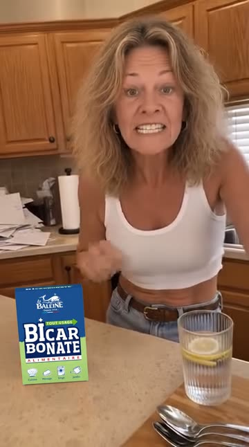

<title>Guia OrganicSet Edição</title>
<meta name="claude:viewport-fit-sides" content="cover">
<link rel="stylesheet" href="https://fonts.googleapis.com/css2?family=Archivo:wght@600;800&family=Figtree:wght@400;500;600&family=JetBrains+Mono:wght@500&display=swap">
<style>
/* Guia em abas: barra de categorias fixa no topo, uma etapa por vez, com o exemplo La Baleine na abertura */
:root{
 --bg:#f3f5f8; --surface:#ffffff; --fg:#15233b; --muted:#5b6880; --line:#d9dfe8;
 --accent:#1f4fa0; --accent-fg:#ffffff; --lime:#4f8a14; --soft:#eaf0f9; --warn-bg:#fdf0cf; --warn-fg:#6d4a00;
 --f-display:"Archivo","Helvetica Neue",Arial,sans-serif; --f-body:"Figtree","Segoe UI",system-ui,sans-serif; --f-mono:"JetBrains Mono",Consolas,monospace;
}
@media (prefers-color-scheme:dark){:root:not([data-theme="light"]){--bg:#0e1522;--surface:#152033;--fg:#e4eaf4;--muted:#9aa7bd;--line:#26344d;--accent:#86aefc;--accent-fg:#0e1522;--lime:#9fd364;--soft:#1a2840;--warn-bg:#3d2f0a;--warn-fg:#f3cf75;color-scheme:dark}}
:root[data-theme="dark"]{--bg:#0e1522;--surface:#152033;--fg:#e4eaf4;--muted:#9aa7bd;--line:#26344d;--accent:#86aefc;--accent-fg:#0e1522;--lime:#9fd364;--soft:#1a2840;--warn-bg:#3d2f0a;--warn-fg:#f3cf75;color-scheme:dark}
*{box-sizing:border-box}
body{background:var(--bg);color:var(--fg);font:16px/1.6 var(--f-body)}
body::before{content:"";position:fixed;inset:0 0 auto;height:env(safe-area-inset-top,0px);z-index:10;background:var(--surface)}
.topo{position:sticky;top:env(safe-area-inset-top,0px);z-index:5;background:var(--surface);border-bottom:1px solid var(--line)}
.topo-in{max-width:1080px;margin:0 auto;padding-left:max(16px,env(safe-area-inset-left,0px));padding-right:max(16px,env(safe-area-inset-right,0px));padding-block:12px 0;display:grid;gap:10px}
.marca{font:800 18px var(--f-display);letter-spacing:-.01em}.marca span{color:var(--lime)}
nav{display:flex;gap:4px;overflow-x:auto;scrollbar-width:thin}
nav a{flex:none;text-decoration:none;color:var(--muted);font:600 14px var(--f-body);padding:10px 12px;border-bottom:3px solid transparent;white-space:nowrap}
nav a small{display:block;font:500 11px var(--f-body);letter-spacing:.06em;text-transform:uppercase;opacity:.8}
nav a[aria-current="page"]{color:var(--accent);border-bottom-color:var(--accent)}
nav a:focus-visible,button:focus-visible{outline:2px solid var(--accent);outline-offset:2px}
main{max-width:1080px;margin:0 auto;padding-left:max(16px,env(safe-area-inset-left,0px));padding-right:max(16px,env(safe-area-inset-right,0px));padding-block:28px 64px}
section{display:grid;gap:18px;max-width:760px}
section.largo{max-width:none}
.etapa{font:600 12px var(--f-body);letter-spacing:.09em;text-transform:uppercase;color:var(--lime)}
h1,h2,h3{font-family:var(--f-display);text-wrap:balance;margin:0}
h1{font-size:clamp(28px,4.5vw,40px);font-weight:800;line-height:1.15}
h2{font-size:24px;font-weight:800}
h3{font-size:17px;font-weight:600}
p{margin:0}
.lead{font-size:18px;color:var(--muted)}
ol.passos{margin:0;padding:0;list-style:none;display:grid;gap:12px;counter-reset:p}
ol.passos>li{counter-increment:p;display:grid;grid-template-columns:36px minmax(0,1fr);gap:12px;align-items:start;background:var(--surface);border:1px solid var(--line);border-radius:10px;padding:14px 16px}
ol.passos>li::before{content:counter(p);font:800 16px var(--f-display);width:32px;height:32px;border-radius:50%;background:var(--soft);color:var(--accent);display:grid;place-items:center}
ol.passos>li>div{min-width:0;display:grid;gap:4px}
.aviso{background:var(--warn-bg);color:var(--warn-fg);border-radius:10px;padding:14px 16px;display:grid;gap:4px}
.dica{background:var(--soft);border-radius:10px;padding:14px 16px;display:grid;gap:4px}
.fala{font-family:var(--f-mono);font-size:14px;background:var(--surface);border:1px solid var(--line);border-left:4px solid var(--accent);border-radius:6px;padding:12px 14px;overflow-wrap:anywhere}
kbd{font:500 13px var(--f-mono);background:var(--surface);border:1px solid var(--line);border-bottom-width:2px;border-radius:4px;padding:1px 6px;white-space:nowrap}
.arq{font:500 13px var(--f-mono);background:var(--soft);border-radius:4px;padding:1px 6px;overflow-wrap:anywhere}
.exemplo{display:grid;grid-template-columns:repeat(2,minmax(0,200px));gap:14px;justify-content:start}
figure{margin:0;display:grid;gap:6px}
figure img{width:100%;max-width:100%;aspect-ratio:9/16;object-fit:cover;border-radius:8px;display:block}
figcaption{font-size:13px;color:var(--muted)}
.mapa{display:grid;grid-template-columns:repeat(auto-fit,minmax(200px,1fr));gap:10px}
.mapa a{display:grid;gap:2px;text-decoration:none;color:var(--fg);background:var(--surface);border:1px solid var(--line);border-radius:10px;padding:14px 16px}
.mapa a b{font-family:var(--f-display)}.mapa a span{font-size:14px;color:var(--muted)}
.mapa a:hover{border-color:var(--accent)}
.fluxo{display:flex;flex-wrap:wrap;gap:6px;align-items:center;font-size:14px}
.fluxo span{background:var(--surface);border:1px solid var(--line);border-radius:999px;padding:5px 12px}
.fluxo i{color:var(--muted);font-style:normal}
table{border-collapse:collapse;width:100%;font-size:15px}
.tabela{overflow-x:auto;background:var(--surface);border:1px solid var(--line);border-radius:10px}
th,td{text-align:left;padding:10px 14px;border-bottom:1px solid var(--line);vertical-align:top}
th{font-size:13px;color:var(--muted);font-weight:600}
tr:last-child td{border-bottom:0}
.navpe{display:flex;justify-content:space-between;gap:10px;flex-wrap:wrap;margin-top:8px}
.navpe a{text-decoration:none;font-weight:600;color:var(--accent);border:1px solid var(--accent);border-radius:8px;padding:9px 14px}
.navpe a.prox{background:var(--accent);color:var(--accent-fg)}
.tela{background:var(--surface);border:1px solid var(--line);border-radius:10px;overflow:hidden;font-size:14px}
.tela .barra{background:var(--soft);padding:8px 12px;font:500 12px var(--f-mono);color:var(--muted);border-bottom:1px solid var(--line)}
.tela .corpo{padding:14px;display:grid;gap:10px}
.tela .msg{border-radius:8px;padding:10px 12px;max-width:92%}
.tela .eu{background:var(--soft);justify-self:end}
.tela .claude{border:1px solid var(--line)}
.tela .msg code{font:500 12.5px var(--f-mono);overflow-wrap:anywhere}
details{background:var(--surface);border:1px solid var(--line);border-radius:10px;padding:12px 16px}
summary{cursor:pointer;font-weight:600}
details p{margin-top:8px}
.comece{background:var(--surface);border:2px solid var(--accent);border-radius:12px;padding:18px 20px;display:grid;gap:10px}
.comece ol{margin:0;padding-left:22px;display:grid;gap:8px}
.comece li::marker{font-family:var(--f-display);font-weight:800;color:var(--accent)}
.comece a,a.link{color:var(--accent)}
.baixar{justify-self:start;margin-top:6px;font:600 15px var(--f-body);background:var(--accent);color:var(--accent-fg);border:0;border-radius:8px;padding:10px 16px;cursor:pointer}
.baixar:disabled{opacity:.6;cursor:default}
.baixar-msg{font-size:14px;color:var(--muted)}
@media (max-width:480px){.exemplo{grid-template-columns:repeat(2,minmax(0,1fr))}}
</style>

<header class="topo"><div class="topo-in">
 <div class="marca">OrganicSet <span>Edição</span></div>
 <nav aria-label="Etapas do guia">
  <a href="#inicio"><small>Comece</small>O que é</a>
  <a href="#instalacao"><small>Uma vez</small>Instalação</a>
  <a href="#chave"><small>Uma vez</small>Chave</a>
  <a href="#passo1"><small>Passo 1</small>Abrir</a>
  <a href="#passo2"><small>Passo 2</small>Pedir</a>
  <a href="#passo3"><small>Passo 3</small>Piloto</a>
  <a href="#passo4"><small>Passo 4</small>Áudio no MiniMax</a>
  <a href="#passo5"><small>Passo 5</small>Mandar o áudio</a>
  <a href="#passo6"><small>Passo 6</small>Vídeo mudo</a>
  <a href="#passo7"><small>Passo 7</small>Lip sync</a>
  <a href="#passo8"><small>Passo 8</small>Montar</a>
  <a href="#duvidas"><small>Ajuda</small>Dúvidas</a>
 </nav>
</div></header>

<main>

<section id="inicio" class="largo">
 <span class="etapa">Comece aqui</span>
 <h1>Troque uma coisa no vídeo e deixe todo o resto igual</h1>
 <p class="lead">O OrganicSet Edição assiste o vídeo de referência, separa os cortes, gera a imagem inicial de cada trecho já com a alteração e escreve os prompts de vídeo. A voz vem do MiniMax, o vídeo é gerado mudo e a boca é sincronizada no Dreamface.</p>
 <div class="comece">
  <h2>Comece por aqui · seu primeiro dia</h2>
  <ol>
   <li><a href="#instalacao"><b>Baixe a pasta</b></a> na aba Instalação (botão "Baixar OrganicSet-Edicao.zip") e descompacte em Documentos.</li>
   <li><a href="#instalacao"><b>Instale</b></a>: dois cliques em <span class="arq">Instalar.bat</span>, depois o VS Code e a extensão Claude Code.</li>
   <li><a href="#chave"><b>Peça a chave ao Lukas</b></a> e rode o <span class="arq">Configurar chave.bat</span>.</li>
   <li><a href="#passo1"><b>Abra a pasta no VS Code</b></a> e o chat do Claude.</li>
   <li><a href="https://claude.ai/artifact/PSCMYjWgQXMMh7QqqFqi1E"><b>Abra a página Cortes La Baleine V3</b></a>, copie a copy e <a href="#passo4"><b>gere o áudio no MiniMax</b></a>. Depois siga do Passo 5 em diante.</li>
  </ol>
 </div>
 <div class="exemplo">
  <figure><figcaption>Original: caixa Arm &amp; Hammer</figcaption></figure>
  <figure><figcaption>Imagem nova: caixa La Baleine</figcaption></figure>
 </div>
 <h2>O caminho de um anúncio</h2>
 <div class="fluxo"><span>Pedir</span><i>→</i><span>Aprovar piloto</span><i>→</i><span>Áudio no MiniMax</span><i>→</i><span>Claude corta o áudio</span><i>→</i><span>Vídeo mudo</span><i>→</i><span>Lip sync no Dreamface</span><i>→</i><span>Montar</span></div>
 <p>Exemplo completo, com os 22 cortes do anúncio La Baleine: <a href="https://claude.ai/artifact/PSCMYjWgQXMMh7QqqFqi1E">Cortes La Baleine V3</a>.</p>
 <h2>O que dá para mudar</h2>
 <div class="tabela"><table>
  <thead><tr><th>Tipo</th><th>Exemplo de pedido</th></tr></thead>
  <tbody>
   <tr><td>Trocar um objeto ou produto</td><td>"Troca a caixa Arm &amp; Hammer pela caixa da La Baleine."</td></tr>
   <tr><td>Acrescentar um objeto</td><td>"Coloca um vaso de manjericão no balcão, à esquerda da pia."</td></tr>
   <tr><td>Trocar a roupa</td><td>"Troca a regata branca da mãe por esta blusa azul."</td></tr>
   <tr><td>Trocar a pessoa</td><td>"Troca a filha por esta avatar."</td></tr>
   <tr><td>Mudar o cenário</td><td>"Deixa os armários brancos, como nesta foto."</td></tr>
  </tbody>
 </table></div>
 <div class="navpe"><span></span><a class="prox" href="#instalacao">Começar pela instalação</a></div>
</section>

<section id="instalacao" hidden>
 <span class="etapa">Uma vez só</span>
 <h1>Instalação</h1>
 <p class="lead">Você vai instalar duas coisas: a pasta do OrganicSet e o VS Code, que é o programa onde você conversa com o Claude. Leva uns 20 minutos. Precisa de Windows com internet e de uma conta do Claude (plano Pro ou maior).</p>
 <h2>Parte A · A pasta do OrganicSet</h2>
 <ol class="passos">
  <li><div><h3>Baixe a pasta</h3><p>Clique no botão abaixo e confirme. O arquivo <span class="arq">OrganicSet-Edicao.zip</span> vai para a pasta Downloads.</p>
   <button type="button" id="baixar-zip" class="baixar" hidden>Baixar OrganicSet-Edicao.zip</button>
   <p class="baixar-msg" id="baixar-msg">Se o botão não aparecer, peça o arquivo ao Lukas.</p></div></li>
  <li><div><h3>Descompacte em Documentos</h3><p>Botão direito no .zip → <b>Extrair tudo</b> → escolha <span class="arq">Documentos</span>. Vai aparecer a pasta <span class="arq">OrganicSet Edicao</span>. Não deixe em Downloads nem na Área de Trabalho.</p></div></li>
  <li><div><h3>Dê dois cliques em <span class="arq">Instalar.bat</span></h3><p>Uma janela preta instala sozinha o que o OrganicSet usa: Python, ffmpeg, Git, a transcrição e o Claude Code. Se o Windows perguntar "Deseja permitir que este aplicativo faça alterações?", clique em <b>Sim</b>.</p></div></li>
  <li><div><h3>Espere a mensagem verde</h3><p>No fim aparece <b>"Tudo instalado"</b>. Se aparecer em amarelo "Ainda não encontrei...", feche e rode o <span class="arq">Instalar.bat</span> de novo. É normal precisar de duas rodadas.</p></div></li>
 </ol>
 <h2>Parte B · O VS Code com o Claude</h2>
 <ol class="passos">
  <li><div><h3>Baixe o VS Code</h3><p>Abra <a class="link" href="https://code.visualstudio.com/download">code.visualstudio.com/download</a>, clique em <b>Windows</b> e instale. Na tela de opções, marque <b>"Adicionar a ação Abrir com Code"</b>. É grátis.</p></div></li>
  <li><div><h3>Instale a extensão do Claude</h3><p>Abra <a class="link" href="https://marketplace.visualstudio.com/items?itemName=anthropic.claude-code">a página da extensão Claude Code</a> e clique em <b>Install</b>; o navegador pede para abrir o VS Code, aceite. Outra forma: no VS Code, aperte <kbd>Ctrl</kbd>+<kbd>Shift</kbd>+<kbd>X</kbd>, busque <b>Claude Code</b> e instale a que é da <b>Anthropic</b>.</p></div></li>
  <li><div><h3>Entre na sua conta</h3><p>Clique no ícone do Claude que aparece no VS Code e faça login com a sua conta do Claude. Só na primeira vez.</p></div></li>
 </ol>
 <div class="dica"><b>Se o Windows bloquear um arquivo .bat</b><p>Se aparecer "O Windows protegeu o computador", clique em <b>Mais informações</b> → <b>Executar assim mesmo</b>. O arquivo veio do Lukas.</p></div>
 <div class="navpe"><a href="#inicio">Voltar</a><a class="prox" href="#chave">Próximo: chave</a></div>
</section>

<section id="chave" hidden>
 <span class="etapa">Uma vez só</span>
 <h1>A chave do Gemini</h1>
 <p class="lead">As imagens são geradas no Nano Banana Pro, do Google. Para isso, o OrganicSet precisa de uma chave de acesso.</p>
 <div class="aviso"><b>Peça a chave ao Lukas Valen</b><p>Fale com o Lukas e peça a chave do Gemini do OrganicSet. Ele te envia por mensagem. Não crie uma chave por conta própria e não passe a chave para ninguém.</p></div>
 <ol class="passos">
  <li><div><h3>Dê dois cliques em <span class="arq">Configurar chave.bat</span></h3><p>Fica dentro da pasta <span class="arq">OrganicSet Edicao</span>.</p></div></li>
  <li><div><h3>Cole a chave e aperte Enter</h3><p>Ela não aparece na tela enquanto você cola. Isso é de propósito.</p></div></li>
  <li><div><h3>Veja a confirmação</h3><p><b>"Chave salva e funcionando"</b> em verde: pronto. Se vier em amarelo, confira com o Lukas se copiou a chave inteira.</p></div></li>
 </ol>
 <div class="dica"><b>Nunca cole a chave no chat do Claude</b><p>Ela fica guardada só no seu computador, fora da pasta. Se o Claude disser que falta a chave ou que os créditos acabaram, avise o Lukas.</p></div>
 <div class="navpe"><a href="#instalacao">Voltar</a><a class="prox" href="#passo1">Próximo: abrir</a></div>
</section>

<section id="passo1" hidden>
 <span class="etapa">Passo 1</span>
 <h1>Abrir o OrganicSet no VS Code</h1>
 <ol class="passos">
  <li><div><h3>Abra a pasta</h3><p>No VS Code: <b>Arquivo → Abrir Pasta</b> → <span class="arq">Documentos\OrganicSet Edicao</span> → <b>Selecionar pasta</b>. Se perguntar "Você confia nos autores?", clique em <b>Sim, confio</b>.</p></div></li>
  <li><div><h3>Abra o chat do Claude</h3><p>Clique no ícone do Claude. Abre um painel de conversa. É ali que você escreve os pedidos.</p></div></li>
  <li><div><h3>Quando ele pedir permissão, aceite</h3><p>Ao rodar uma etapa (preparar o vídeo, gerar imagem, cortar o áudio), o Claude pergunta se pode executar. Responda <b>Sim</b>. Para não ser perguntado de novo na mesma sessão, escolha a opção de permitir sempre.</p></div></li>
 </ol>
 <div class="dica"><b>Da próxima vez</b><p>O VS Code costuma reabrir a última pasta. Se não reabrir, use <b>Arquivo → Abrir Recente</b>. Também dá para clicar com o botão direito na pasta <span class="arq">OrganicSet Edicao</span> e escolher <b>Abrir com Code</b>.</p></div>
 <div class="navpe"><a href="#chave">Voltar</a><a class="prox" href="#passo2">Próximo: pedir</a></div>
</section>

<section id="passo2" hidden>
 <span class="etapa">Passo 2</span>
 <h1>Fazer o pedido</h1>
 <p class="lead">Escreva como falaria com um assistente. Mande três coisas: o vídeo, o que muda e a imagem do que entra.</p>
 <p class="fala">Troca a caixa de bicarbonato Arm &amp; Hammer deste vídeo pela caixa da La Baleine. Vídeo: "C:\Users\joao\Documents\ref\anuncio.mp4". Foto da caixa: "C:\Users\joao\Documents\ref\caixa.png". Vamos fazer com MiniMax e Dreamface.</p>
 <ol class="passos">
  <li><div><h3>O vídeo</h3><p>Cole o caminho do arquivo (veja como copiar o caminho no Passo 5) ou um link do Instagram, do TikTok ou do Drive. O Drive precisa estar como "Qualquer pessoa com o link".</p></div></li>
  <li><div><h3>O que muda</h3><p>Uma frase dizendo o que sai e o que entra. Se for roupa ou pessoa, diga qual pessoa ("a mãe loira", "a moça de moletom").</p></div></li>
  <li><div><h3>A imagem do que entra</h3><p>Foto limpa do produto, do objeto, da roupa, da pessoa ou do cenário. Quanto mais nítida, melhor.</p></div></li>
 </ol>
 <div class="dica"><b>O que acontece depois</b><p>Ele separa os cortes, transcreve a fala, assiste cada trecho e escreve o roteiro com quem fala e a emoção de cada fala. Num vídeo de 2 minutos, isso leva alguns minutos.</p></div>
 <div class="navpe"><a href="#passo1">Voltar</a><a class="prox" href="#passo3">Próximo: piloto</a></div>
</section>

<section id="passo3" hidden>
 <span class="etapa">Passo 3</span>
 <h1>Aprovar o piloto</h1>
 <p class="lead">Antes de gerar todas as imagens, ele gera só 3 (um trecho aberto, um close e o mais difícil) e abre uma página para você conferir.</p>
 <ol class="passos">
  <li><div><h3>Olhe as 3 imagens ao lado do original</h3><p>A alteração está certa e nítida? O resto ficou igual (rosto, roupa, mãos, cenário)? O objeto está apoiado em algum lugar, e não solto no ar?</p></div></li>
  <li><div><h3>Responda no chat</h3><p>Se estiver bom, escreva <b>"aprovado"</b>. Se não, diga o que mudar.</p></div></li>
 </ol>
 <p class="fala">A caixa ficou grande demais no T09, deixa do tamanho da original e apoiada no balcão.</p>
 <div class="navpe"><a href="#passo2">Voltar</a><a class="prox" href="#passo4">Próximo: áudio</a></div>
</section>

<section id="passo4" hidden>
 <span class="etapa">Passo 4</span>
 <h1>Gerar o áudio no MiniMax</h1>
 <p class="lead">Na página do projeto, o bloco "Copy para o MiniMax" traz todas as falas, com "Filha:" e "Mãe:" antes de cada uma.</p>
 <ol class="passos">
  <li><div><h3>Copie a copy inteira</h3><p>Clique em <b>Copiar a copy para o MiniMax</b>.</p></div></li>
  <li><div><h3>Cole no MiniMax e gere um arquivo só</h3><p>Escolha as vozes indicadas na página e use a emoção automática. Não precisa separar fala por fala.</p></div></li>
  <li><div><h3>Salve o arquivo na pasta do projeto</h3><p>Baixe o áudio e mova para <span class="arq">Documentos\OrganicSet Edicao\projetos\nome-do-projeto\</span>. Assim fica tudo junto.</p></div></li>
 </ol>
 <div class="dica"><b>Se uma fala sair sem emoção</b><p>A tabela da página mostra o tom de cada fala no vídeo original. Gere só aquela fala de novo, com a emoção indicada, e mande junto no próximo passo.</p></div>
 <div class="navpe"><a href="#passo3">Voltar</a><a class="prox" href="#passo5">Próximo: mandar o áudio</a></div>
</section>

<section id="passo5" hidden>
 <span class="etapa">Passo 5</span>
 <h1>Mandar o áudio para o Claude</h1>
 <p class="lead">Você só precisa colar o caminho do arquivo no chat. O Claude acha cada fala, tira o "Filha"/"Mãe" falado, corta um arquivo por fala e diz o tempo de cada corte de vídeo.</p>
 <ol class="passos">
  <li><div><h3>Copie o caminho do arquivo</h3><p>No Explorador de Arquivos, clique com o <b>botão direito</b> no áudio e escolha <b>Copiar como caminho</b>. Outra forma: clique uma vez no arquivo e aperte <kbd>Ctrl</kbd>+<kbd>Shift</kbd>+<kbd>C</kbd>.</p></div></li>
  <li><div><h3>Cole no chat do Claude, com o pedido</h3><p>No VS Code, clique na caixa de mensagem, aperte <kbd>Ctrl</kbd>+<kbd>V</kbd> e escreva o que quer.</p></div></li>
  <li><div><h3>Aceite quando ele pedir para rodar</h3><p>Ele vai transcrever e cortar o áudio. Leva de 1 a 3 minutos para um anúncio de 2 minutos.</p></div></li>
 </ol>
 <div class="tela" aria-label="Exemplo da conversa no chat">
  <div class="barra">Chat do Claude · VS Code</div>
  <div class="corpo">
   <div class="msg eu">Aqui está o áudio do MiniMax do projeto caixa-bicarbonato, corta por fala: <code>"C:\Users\joao\Documents\OrganicSet Edicao\projetos\caixa-bicarbonato\minimax.mp3"</code></div>
   <div class="msg claude">Cortei as 25 falas. Os arquivos estão em <code>projetos\caixa-bicarbonato\audios\</code> (F01.wav a F25.wav). Ficaram 22 cortes de vídeo; o corte do SHOT09 tem 8,2 s, então divida em dois. Tempos de cada corte na página do projeto.</div>
  </div>
 </div>
 <div class="dica"><b>O caminho vem entre aspas</b><p>O "Copiar como caminho" já põe aspas no começo e no fim. Pode colar assim mesmo.</p></div>
 <div class="navpe"><a href="#passo4">Voltar</a><a class="prox" href="#passo6">Próximo: vídeo mudo</a></div>
</section>

<section id="passo6" hidden>
 <span class="etapa">Passo 6</span>
 <h1>Gerar o vídeo mudo de cada corte</h1>
 <p class="lead">Na página do projeto, cada corte tem a imagem inicial e o "prompt de vídeo". O vídeo sai sem voz, com a boca de quem fala livre e começando fechada.</p>
 <ol class="passos">
  <li><div><h3>Abra a sua IA no modo imagem para vídeo</h3><p>Veo 3 (Flow, modo Frames), Kling, MiniMax ou outra.</p></div></li>
  <li><div><h3>Suba a imagem inicial do corte</h3><p>Ela fica em <span class="arq">projetos\nome-do-projeto\imagens\</span>. Se o cartão disser "refazer imagem", faça isso antes.</p></div></li>
  <li><div><h3>Cole o prompt de vídeo e deixe o áudio desligado</h3><p>A duração do clipe tem que cobrir o tempo do corte que o Claude deu no Passo 5.</p></div></li>
  <li><div><h3>Confira antes do lip sync</h3><p>O rosto de quem fala ficou de frente e nítido o clipe todo? Nada passou na frente da boca? O objeto ficou parado no cenário? Se não, gere de novo.</p></div></li>
 </ol>
 <div class="navpe"><a href="#passo5">Voltar</a><a class="prox" href="#passo7">Próximo: lip sync</a></div>
</section>

<section id="passo7" hidden>
 <span class="etapa">Passo 7</span>
 <h1>Lip sync no Dreamface</h1>
 <ol class="passos">
  <li><div><h3>Junte cada vídeo com o áudio dele</h3><p>No Dreamface, use o vídeo mudo do corte e o arquivo da fala (F01.wav, F02.wav...), que fica em <span class="arq">projetos\nome-do-projeto\audios\</span>.</p></div></li>
  <li><div><h3>Corte com duas falas: dois lip syncs</h3><p>Faça um para cada pessoa, cada um no tempo da fala dela. O cartão do corte avisa quando é o caso.</p></div></li>
  <li><div><h3>Fala em off não precisa de lip sync</h3><p>Quando quem fala está fora do quadro, é só colocar o áudio por cima na montagem.</p></div></li>
 </ol>
 <div class="navpe"><a href="#passo6">Voltar</a><a class="prox" href="#passo8">Próximo: montar</a></div>
</section>

<section id="passo8" hidden>
 <span class="etapa">Passo 8</span>
 <h1>Montar o vídeo</h1>
 <ol class="passos">
  <li><div><h3>Junte na ordem</h3><p>Siga a ordem dos cortes da página (SHOT01, SHOT02... ou T01, T02...). É a mesma do vídeo original.</p></div></li>
  <li><div><h3>Use o tempo do áudio</h3><p>Cada corte termina quando a fala dele termina. O clipe gerado pode ser mais longo; corte o excesso.</p></div></li>
  <li><div><h3>Iguale cor e trilha</h3><p>Se misturar IAs, iguale cor e nitidez entre os clipes. A trilha entra na edição.</p></div></li>
 </ol>
 <div class="dica"><b>Quer ajuda na conferência?</b><p>Coloque os clipes numa pasta, copie o caminho da pasta e peça no chat: "confere estes clipes". Ele olha os quadros e a fala de cada um e diz quais refazer.</p></div>
 <div class="navpe"><a href="#passo7">Voltar</a><a class="prox" href="#duvidas">Dúvidas</a></div>
</section>

<section id="duvidas" hidden>
 <span class="etapa">Ajuda</span>
 <h1>Dúvidas comuns</h1>
 <details><summary>Não acho o ícone do Claude no VS Code</summary><p>Confira se a extensão Claude Code da Anthropic está instalada (<kbd>Ctrl</kbd>+<kbd>Shift</kbd>+<kbd>X</kbd>). Depois feche e abra o VS Code de novo.</p></details>
 <details><summary>Prefiro não usar o VS Code</summary><p>Dê dois cliques em <span class="arq">Abrir OrganicSet.bat</span>, dentro da pasta. Abre o Claude numa janela de texto, já na pasta certa. Tudo deste guia funciona igual: é só colar os caminhos ali.</p></details>
 <details><summary>O Claude disse que falta a chave ou que os créditos do Gemini acabaram</summary><p>Avise o Lukas. Se for a primeira vez, rode o <span class="arq">Configurar chave.bat</span> com a chave que ele mandar.</p></details>
 <details><summary>O Claude disse "não encontrei esta fala no áudio"</summary><p>O MiniMax provavelmente mudou ou pulou palavras naquela fala. Ouça o trecho e gere só aquela fala de novo.</p></details>
 <details><summary>Uma fala passou de 8 segundos</summary><p>Divida em dois cortes de vídeo, ou peça ao Claude para encurtar a fala e gere o áudio dela de novo.</p></details>
 <details><summary>O link do Drive não baixou</summary><p>Deixe o arquivo como "Qualquer pessoa com o link", ou baixe o vídeo e cole o caminho do arquivo.</p></details>
 <details><summary>Algo travou ou deu um erro que não entendi</summary><p>Tire um print da tela e mande para o Lukas.</p></details>
 <div class="navpe"><a href="#passo8">Voltar</a><a class="prox" href="#inicio">Voltar ao início</a></div>
</section>

</main>

<script>
const secoes=[...document.querySelectorAll('main section')],links=[...document.querySelectorAll('nav a')];
function mostrar(){
 const id=(location.hash||'#inicio').slice(1),alvo=secoes.find(s=>s.id===id)||secoes[0];
 secoes.forEach(s=>s.hidden=s!==alvo);
 links.forEach(a=>{const atual=a.getAttribute('href')==='#'+alvo.id;if(atual){a.setAttribute('aria-current','page');a.scrollIntoView({block:'nearest',inline:'nearest'});}else a.removeAttribute('aria-current');});
 window.scrollTo(0,0);
}
addEventListener('hashchange',mostrar);mostrar();
</script>
<script>
// O .zip vai dentro da página (base64) e é entregue pela capability downloads, com confirmação do navegador.
const ZIP_B64="%%ZIP_B64%%";
(async()=>{
 const btn=document.getElementById('baixar-zip'),msg=document.getElementById('baixar-msg');
 let dl=null;try{dl=await window.claude?.use?.("downloads");}catch(e){}
 if(!dl)return;
 btn.hidden=false;msg.textContent='';
 btn.addEventListener('click',async()=>{
  btn.disabled=true;
  try{
   const bin=atob(ZIP_B64),bytes=new Uint8Array(bin.length);for(let i=0;i<bin.length;i++)bytes[i]=bin.charCodeAt(i);
   await dl.save({filename:'OrganicSet-Edicao.zip',data:new Blob([bytes])});
   msg.textContent='Pronto. Procure o arquivo na pasta Downloads e siga para o passo 2.';
  }catch(e){
   msg.textContent=e&&e.code==='declined'?'Download cancelado. Clique de novo quando quiser.':e&&e.code==='rate_limited'?'Já existe uma confirmação aberta. Responda a ela e tente de novo.':'Não deu para baixar aqui. Peça o arquivo ao Lukas.';
  }finally{btn.disabled=false;}
 });
})();
</script>
